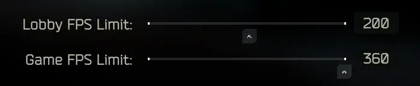

Mod
Expanded FPS Limit
- Downloads
- 13,409
- Favourites
- 14
- Mod lists
- 27
Increases maximum FPS limit from 144 (game) and 60 (lobby) up to 360 FPS.
Particularly useful if you can’t stomach the 60 FPS lock in menus.

The 360 FPS value can be increased further via config (F12 menu).
Background FPS limit can be specified via config, which limits FPS when game is minimized (disabled by default).
Version
1.2.0
SPT ^4.0.0
Fika: unknown
5,177 downloads4.3 KB
- Added “Background FPS limit”, which can be found in configuration manager (F12 menu).
- Added ability to specify minimum FPS limit (below 30 FPS).
- No longer need to restart game after changing config.
VirusTotal: report 1
Version
1.1.0
SPT ^4.0.0
Fika: unknown
3,236 downloads2.7 KB
Updated for 4.0.
VirusTotal: report 1
Version
1.0.0
SPT ~3.11.0
Fika: unknown
4,996 downloadsUnknown size
Works with 3.10 and 3.11.
VirusTotal: report 1